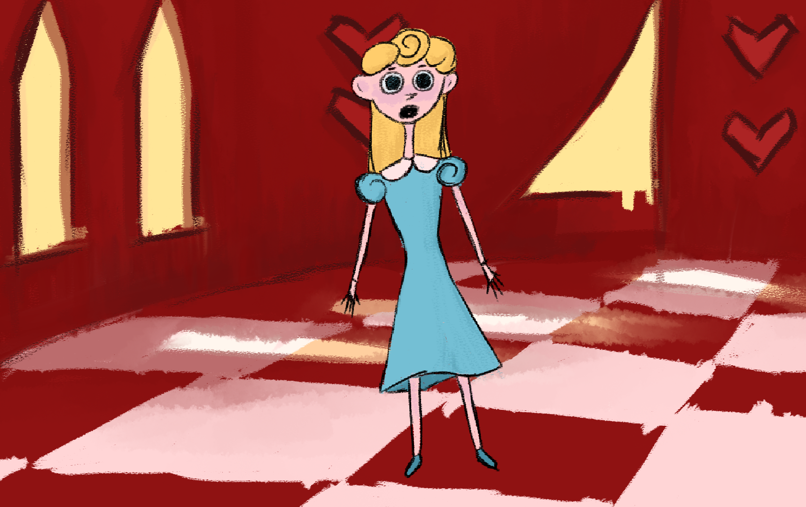
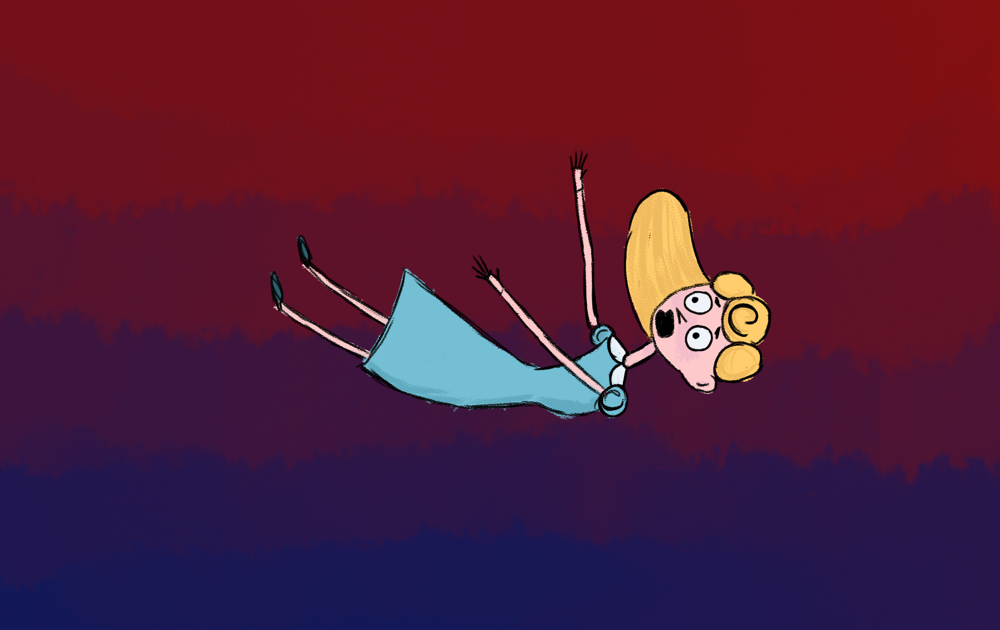

Children’s storybook vibes bring Alice’s final chapter to life. The trippy silent animation tells her last standoff with the Red Queen’s cards, her fall back through the rabbit hole, and waking back up in the real world. Alice’s look contrasts with the Red Castle and cards, blue and golden blonde against a deep red. All elements and scees were drawn and painted beforehand in Photoshop, then animated in After Effects.
Alice
- Chapter 12
2D Animation


